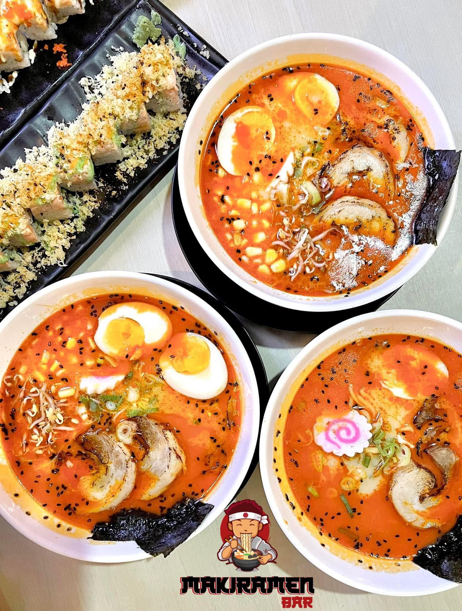
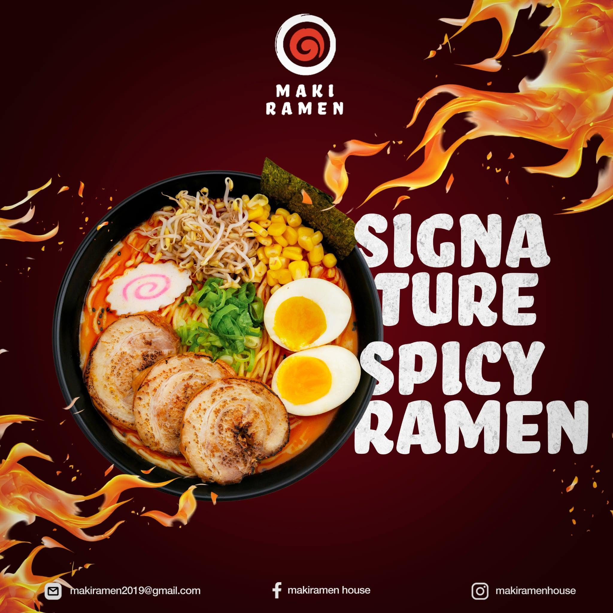
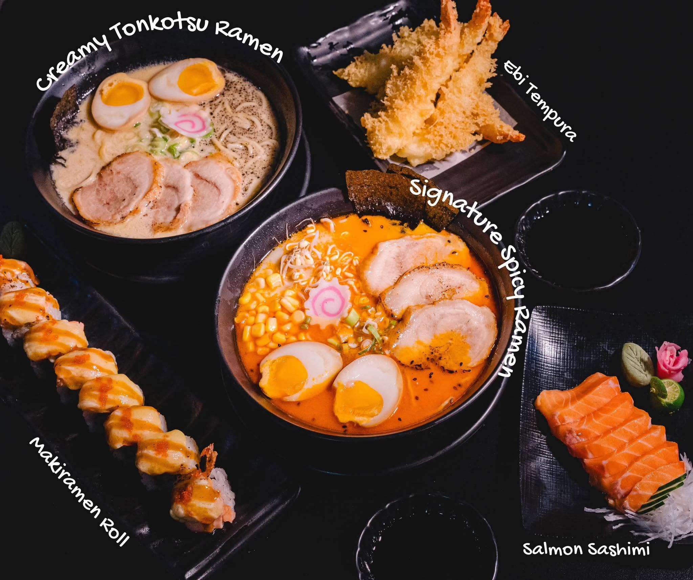
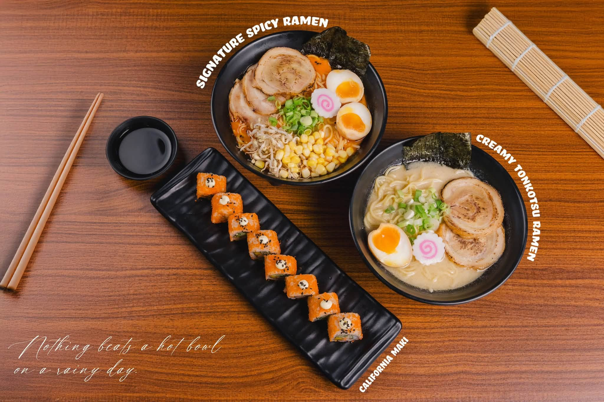
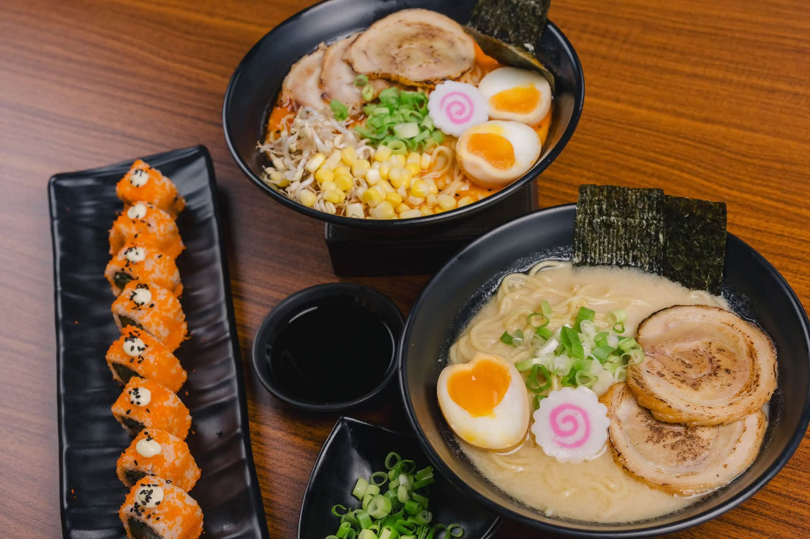
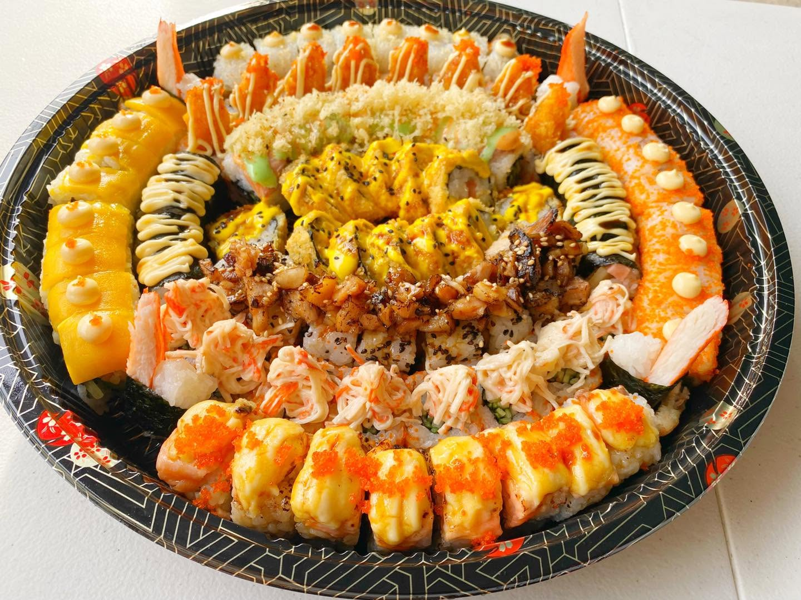
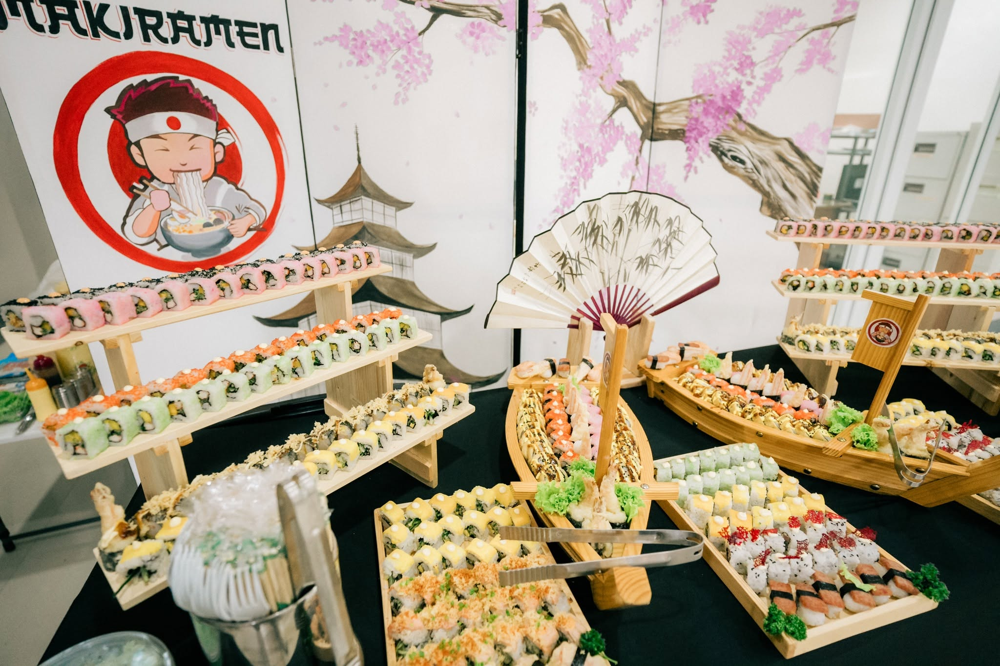
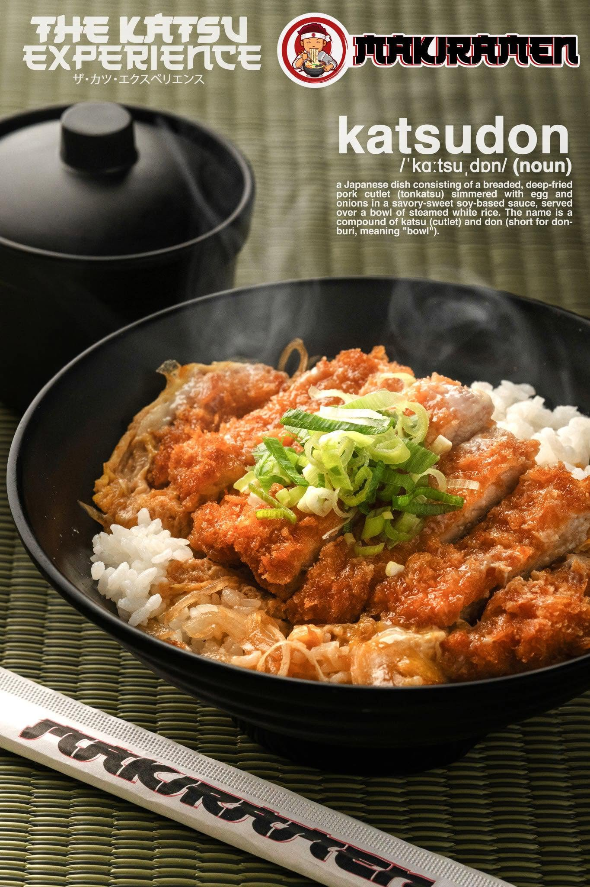
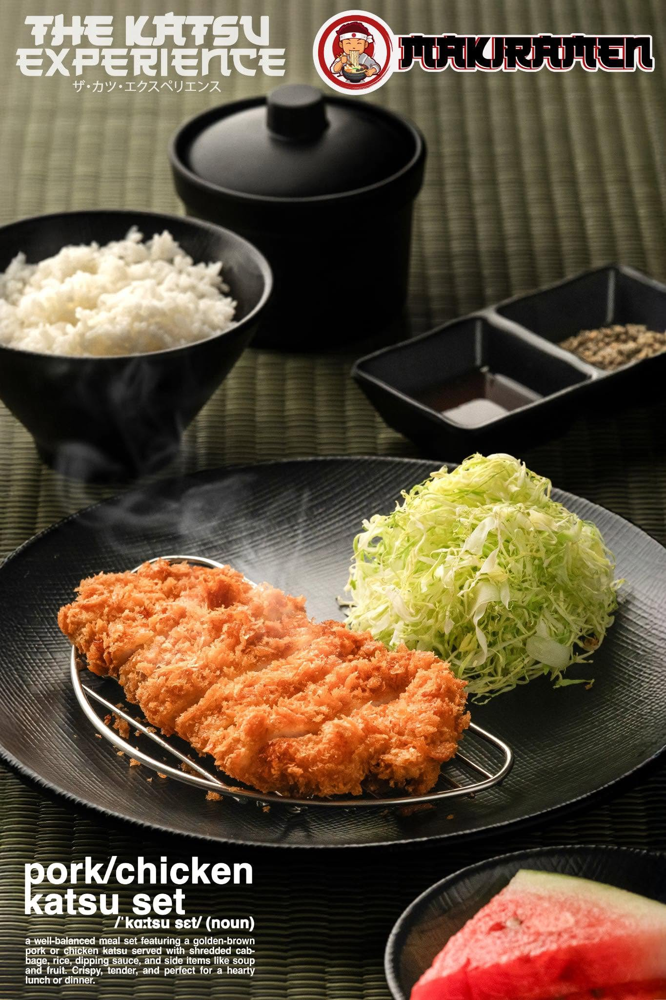
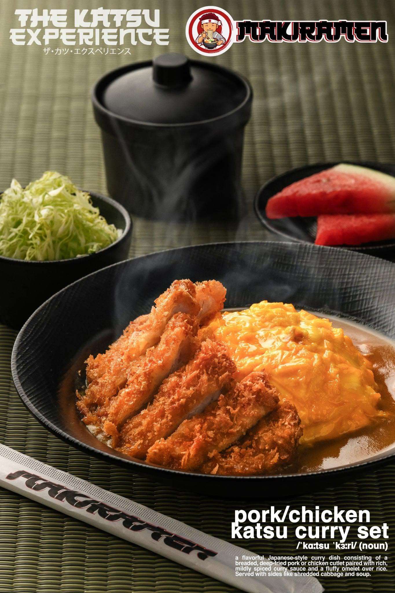

Signature Spicy Ramen
Rich and spicy broth, chashu, ajitama, corn, bamboo shoots, and nori.
₱280Authentic Japanese flavors made fresh for every bowl.

Rich and spicy broth, chashu, ajitama, corn, bamboo shoots, and nori.
₱280
Creamy pork bone broth, chashu, ajitama, kikurage, green onions, and nori.
₱270
Soy sauce based broth, chashu, ajitama, menma, green onions, and nori.
₱260
Savory miso broth, chashu, ajitama, corn, bean sprouts, and nori.
₱270
Comforting Japanese ramen with flavorful broth and fresh toppings.
₱260
Freshly prepared sushi rolls with premium Japanese ingredients.
₱220
Crispy and flavorful sushi rolls prepared fresh to order.
₱240
A satisfying Japanese-style meal perfect for lunch or dinner.
₱250
Delicious side dishes made to complement your ramen.
₱180
A refreshing drink to pair with your favorite ramen.
₱120